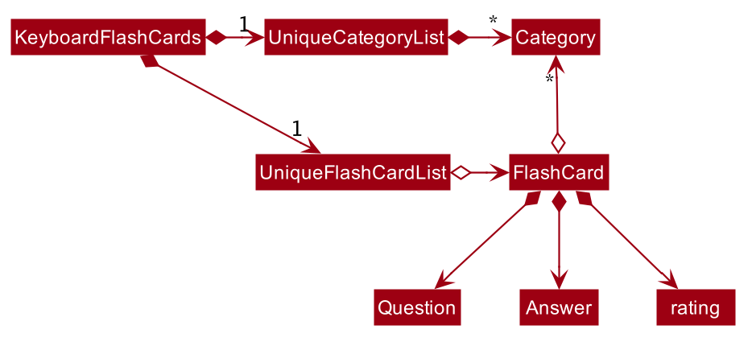

By: T12-4 Since: Sept 2019
- 1. Introduction
- 2. Setting up
- 3. Design
- 4. Implementation
- 5. Documentation
- 6. Testing
- 7. DevOps
- Appendix A: Product scope
- Appendix B: User stories
- Appendix C: Use cases
- Appendix D: Non-functional requirements
- Appendix E: Glossary
- Appendix F: Product Survey
- Appendix G: Instructions for manual testing
1. Introduction
This document details various aspects of the implementation of the KeyboardFlashCards application. It serves as a guide for any software developer who wishes to maintain or add on to the project - as such, it is extremely detailed and technical, and a certain degree of expertise may be required to fully understand everything here.
KeyboardFlashCards (KFC) is a desktop flashcard manager application. It is primarily targeted at university undergraduates, particularly computing students. As such, it is optimized for users who prefer to work with a Command Line Interface (CLI) while still enjoying the benefits of a Graphical User Interface (GUI).
The application is written entirely in the Java programming language, with a GUI implemented using JavaFX. Its code base currently contains an approximate 25 KLoC.
The following admonitions will occasionally appear throughout this document; you may wish to take note of them. Here is what each of them means:
| A point of information that you may wish to take note of |
| A cautionary warning |
| A tip or word of advice |
2. Setting up
Refer to the guide here.
3. Design
This section will show you the designs for varies component of KeyboardFlashCards.
3.1. Architecture

The Architecture Diagram given above explains the high-level design of the App. Given below is a quick overview of each component.
The .puml files used to create diagrams in this document can be found in the diagrams folder.
Refer to the Using PlantUML guide to learn how to create and edit diagrams.
|
-
At app launch: Initializes the components in the correct sequence, and connects them up with each other.
-
At shut down: Shuts down the components and invokes cleanup method where necessary.
Commons represents a collection of classes used by multiple other components.
The following class plays an important role at the architecture level:
-
LogsCenter: Used by many classes to write log messages to the App’s log file.
The rest of the App consists of four components.
Each of the four components
-
Defines its API in an
interfacewith the same question as the Component. -
Exposes its functionality using a
{Component Name}Managerclass.
For example, the Logic component (see the class diagram given below) defines it’s API in the Logic.java interface and exposes its functionality using the LogicManager.java class.

How the architecture components interact with each other
The Sequence Diagram below shows how the components interact with each other for the scenario where the user issues the command delete 1.
delete 1 commandThe sections below give more details of each component.
3.2. UI component
API : Ui.java
The UI consists of a MainWindow that is made up of parts e.g.CategoryListPane, CommandBox, ResultDisplay, FlashCardListPanel, StatusBarFooter, DeadlineListPane etc. All these, including the MainWindow, inherit from the abstract UiPart class.
The UI component uses JavaFx UI framework. The layout of these UI parts are defined in matching .fxml files that are in the src/main/resources/view folder. For example, the layout of the MainWindow is specified in MainWindow.fxml
The UI component,
-
Executes user commands using the
Logiccomponent. -
Listens for changes to
Modeldata so that the UI can be updated with the modified data.
3.3. Logic component
API :
Logic.java
-
Logicuses theFlashCardsParserclass to parse the user command. -
This results in a
Commandobject which is executed by theLogicManager. -
The command execution can affect the
Model(e.g. adding a flashCard). -
The result of the command execution is encapsulated as a
CommandResultobject which is passed back to theUi. -
In addition, the
CommandResultobject can also instruct theUito perform certain actions, such as displaying help to the user.
Given below is the Sequence Diagram for interactions within the Logic component for the execute("delete 1") API call.
delete 1 Command
The lifeline for DeleteCommandParser should end at the destroy marker (X) but due to a limitation of PlantUML, the lifeline reaches the end of diagram.
|
3.4. Model component

API : Model.java
The Model,
-
stores a
UserPrefobject that represents the user’s preferences. -
stores the KeyboardFlashCards' data.
-
exposes an unmodifiable
ObservableList<FlashCard>that can be 'observed' e.g. the UI can be bound to this list so that the UI automatically updates when the data in the list change. -
does not depend on any of the other three components.
As a more OOP model, we can store a Category list in KeyboardFlashCards, which FlashCard can reference. This would allow KeyboardFlashCards to only require one Category object per unique Category, instead of each Flashcard needing their own Category object. An example of how such a model may look like is given below. |
3.5. Storage component

API : Storage.java
The Storage component,
-
can save
UserPrefobjects in json format and read it back. -
can save the KeyboardFlashCards data in json format and read it back.
3.6. Common classes
Classes used by multiple components are in the seedu.addressbook.commons package.
4. Implementation
This section describes some noteworthy details on how certain features are implemented.
4.1. Add feature
4.1.1. Implementation
The add feature allows the user to add FlashCard(s) with compulsory field of QUESTION and ANSWER. CATEGORY are optional fields which the user can add to the flashcard later using the edit feature.
|
Following are the prefixes for each field: - q> : QUESTION- a> : ANSWER- c> : CATEGORY
|
Given below is an example usage scenario of add :
The user executes add q>1+1 a>2 c>math to add new FlashCard.
The following sequence diagram shows how the add operation works:

The add feature does not allow adding of duplicate FlashCard(s).
If the FlashCard exists in the storage, an error will be shown.
Duplicate FlashCard(s) refers to FlashCard(s) that have the exact same question and answer.
|
The following activity diagram summarizes what happens when a user executes an add command:

4.1.2. Design considerations
Aspect: How to implement add
-
Alternative 1(current choice): Use command
addtogether with prefixes likeq>,a>andc>-
pros: Easier to implement and easier to process the data.
-
cons: User might miss the prefixes hence adding wrong
FlashCard(s)
-
-
Alternative 2: Make use of the GUI. After user execute
addcommand, an addFlashCardwindow would pop up and there is segment for individual fields.-
pros: More user friendly and void user input error.
-
cons: Harder to implement.
-
| Alternative 1 was preferred as we have constraints using command line interface. In addition, there was limited time. |
4.2. Add and Remove Deadline feature
4.2.1. Implementation
The deadline feature allows the user to add tasks with specific due dates, with a compulsory field
of TASK and DUE DATE.
The following are new classes used to integrate the Deadline feature.
-
Deadline— Object class, containing important information such as theTaskandDueDate. -
UniqueDeadlineList— Contains aObservableListofDeadlineobjects. The list will be initialised from the storage at start up of application. AComparatorclass was added to arrange the list according to ascendingDueDate. -
DeadlineCommand— Embodies theDeadlinecommand by the user. It will hold all the information about theDeadlinethat will be added. -
DeadlineCommandParser— Parses user input and uses it to construct aDeadlineCommandinstance. -
RemoveCommand— Holds information on whichDeadlineto be removed. Contains anIndexobject. -
RemoveCommandParser— Parses user input and uses it to construct aRemoveCommandinstance.
In addition, various Exception classes are added to handle possible runtime errors while adding or removing Deadline(s).
This is done to ensure that the user specified Deadline is valid for storage and processing.
-
DuplicateDeadlineException— This exception is thrown when the user attempts to add an identicalDeadlineobject is added into the existingUniqueDeadlineList. -
DeadlineNotFoundException— This exception is thrown when the user attempts to remove aDeadlineobject that does not exist in theUniqueDeadlineList.
For the add Deadline feature - deadline, the following are the prefixes for each field
- t> : TASK
- d> : DUE DATE
- For DUE DATE : Date format must be in dd/MM/yyyy
i.e. 01/01/2020
The upper cased Deadline represents the object class that contains Task and DueDate, while the lower-cased
deadline represents the command used to add Deadline objects into our storage.
|
Given below is an example usage scenario of deadline command:
The user executes deadline t>Complete Homework d>04/10/2020 to add new Deadline to the task
of completing homework by the 4th October 2020.
The deadline feature does not allow adding of duplicate/identical Deadline(s). Also, new Deadline(s) must
be later than the current date and is a valid type of date i.e. 29/02/2019 is invalid as 2019 is not a leap year.
|
The following sequence diagram shows how the deadline operation works:

The following activity diagram summarizes what happens when a user executes a deadline command.

The remove command works in a similar way, and hence the sequence and activity diagrams will be omitted for redundancy.
4.2.2. Design considerations
Aspect: How to implement Deadline
-
Alternative 1(current choice): Use command
deadlinetogether with prefixes liket>andd>-
Pros: Easier to implement
-
Cons: User might miss the prefixes hence adding wrong
Deadline(s)
-
-
Alternative 2: Make use of the GUI. after user execute
deadlinecommand, an adddeadlinewindow would pop up with a section for individual fields-
Pros: More user friendly
-
Cons: Difficult to implement. Might be slower for the user to key in
Deadline(s) as compared to using a one liner with prefixes
-
4.3. Bad rating feature
4.3.1. Implementation
The bad feature allows the user to rate specific FlashCard(s) as "Bad" if they did not perform well on them.
These rated FlashCard(s) will then we stored as a Deadline dated 3 days later, where the user will then be reminded to
re-test them.
This is a simple implementation of a type of evidence-based learning technique known as Spaced Repetition. This is used as a form of active recall technique which is said to overcome forgetting, theorised by Hermann Ebbinghaus, and his theory of Forgetting Curve.
The following are new classes used to integrate the "Bad" FlashCard rating feature.
-
BadQuestions— Main object class for the feature. Makes use of aHashMapof key-value pairing of a DateStringthat is converted to aLocalDateclass as the key, and the value is aArrayListofFlashCard(s). This allows ease of search for "Bad" ratedFlashCard(s) based on the date stored. -
BadCommand— Contains aObservableListofDeadlineobjects. The list will be initialised from the storage at start up of application. AComparatorclass was added to arrange the list according to ascendingDueDate. -
ListBadCommand— Embodies theDeadlinecommand by the user. It will hold all the information about theDeadlinethat will be added. -
RemoveBadCommand— Parses user input and uses it to construct aDeadlineCommandinstance.
In addition, two Exception classes are added to handle possible runtime errors while adding new "Bad" FlashCard(s).
This is done to ensure that the user specified "Bad" FlashCard is valid for storage and processing.
-
NoBadFlashCardException— This exception is thrown when the user attempts to add an identicalDeadlineobject is added into the existingUniqueDeadlineList. -
DuplicateFlashCardAndDeadlineException— This exception is thrown when the user attempts to add an identicalDeadlineobject is added into the existingUniqueDeadlineList.
|
Following are the prefixes for each field: - bad INDEXi.e. bad 2 |
4.3.2. Design considerations
Aspect: How to store "Bad" FlashCard in storage
-
Alternative 1(current choice): Use a
HashMapwith the specified date as the key and the values asArrayListofFlashCard(s). Use of the Google Gson library to save and fetchHashMapfrom and to Json format.-
Pros: Easier for searching and sorting purposes, as entire
FlashCardobject is stored and easily referred using the date as key. Can fetch more than just the answer of theFlashCard -
Cons: Separated from the
FlashCardUniqueFlashCardList, which might confuse the user as there will be two different lists ofFlashCard
-
-
Alternative 2: Use similar implementation as how
FlashCardandDeadlineobjects are stored in storage; use anObservableListthat can be displayed in GUI.-
Pros: Easier to implement, clearer for user to see and fetch these "Bad" rated
FlashCard(s) -
Cons: Difficult to manipulate in the future, especially when we want to implement automated test reminders for these "Bad" rated
FlashCard(s). AHashMapwill allow easy fetching using the specified date as key
-
4.4. Exporting/Importing of FlashCards
4.4.1. About
Our application currently supports the exporting of FlashCards to two file formats ('.docx' and '.json'), and importing of FlashCards from one
file format ('.json'). Through these features, a user can easily transfer their KFC data to an external file, and another user
can just as easily transfer the same data back into their own copy of KFC.
4.4.2. Implementation
The Export/Import feature is primarily facilitated by the following classes:
-
ExportCommand— Embodies anexportcommand by the user; carries information about whichFlashCardsare to be exported, and to where -
ExportCommandParser— Parses user input and uses it to construct anExportCommandinstance -
ImportCommand— Embodies animportcommand by the user; carries information about whereFlashCardsare to be imported from -
ImportCommandParser— Parses user input and uses it to construct anImportCommandinstance -
ExportPath— Represents the path to a specific file - either absolute or relative to the application directory -
ExportPathFactory— Parses the user-provided file path and creates instances ofExportPath
The "export" in ExportPath is to be taken as a noun, not a verb. An ExportPath, therefore, is not the path that we export to, but the
path of an export. ExportPaths are used in both exporting and importing of files.
|
ExportPath is an abstract class that follows the factory pattern. Each subclass of ExportPath represents the path to a specific file of a
specific extension (e.g. an instance of DocumentPath represents the path to a specific document). Instances of these subclasses are created by
ExportPathFactory#getExportPath(String), which determines the appropriate subclass to create based on the extension of the provided file path String.
Once created, an ExportPath will expose the following relevant methods:
-
getPath()— Returns a JavaPathobject that represents thisExportPath -
export(List<FlashCard> list)— Exports the givenListofFlashCardsto the file path embodied by thisExportPath -
importFrom()— Attempts to importFlashCardsfrom the file path represented by thisExportPath
Not all ExportPath subclasses will implement the importFrom() method. DocumentPath, for example, does not.
|
Because ExportPath follows the factory pattern, any class that deals with ExportPath or its subclasses need not know which particular subclass it is
dealing with exactly. Each ExportPath subclass will implement its own export and import methods, which, when called, will perform the required operations
without any further hassle. Of course, due to the Separation of Concerns principle, the ExportPath subclasses will not handle these directly.
Instead, they will delegate the work to other utility classes, which, in turn, interface with the external libraries necessary to complete the task.
TIP: The exporting/importing functionality is extremely easy to extend - you can add support for a new format simply through the creation of new subclasses of ExportPath.
You can find all relevant classes in the seedu.address.model.export package. The only exceptions are ExportCommand, ImportCommand, ExportCommandParser, and ImportCommandParser, which can be found in the seedu.address.logic package.
|
The following table shows the classes and methods that you may have to deal with when exporting to or importing from each format:
Table 1: Overview of classes and methods involved in the Export/Import feature
The number of classes supporting the Export/Import feature is rather large. These classes also span more than one package in the application. The following class diagram will help you to better understand the associations and relationships between these classes:

Figure 1: Class diagram of the classes directly relevant to importing and exporting
The following sequence diagram shows the classes, methods, and interactions involved
when the user tries to export to a document file:

Figure 2: Sequence diagram showing the process of exporting to a document file
The following activity diagrams provide a general overview of the events that occur when a user executes an export or import command:


Left - Figure 3: Activity diagram of the execution of an export command
Right - Figure 4: Activity diagram of the execution of an import command
4.4.3. Design considerations
This section describes some of the design considerations that went into the implementation of this feature. |
Aspect: Implementation of exporting functionality for different file formats
-
Alternative 1 (current choice): Have a single
exportcommand - leave file formats to be handled by underlying classes-
Pros: Is easier for user to remember; can easily be extended to support additional file formats
-
Cons: Is harder to implement
-
-
Alternative 2: Have a separate command for exporting to each format (e.g.
exportdoc,exportjson, etc.)-
Pros: Is easier to implement
-
Cons: Results in user having more commands to remember; new commands must be added to support new file formats
-
| Alternative 1 was preferred for its ease of extensibility. |
Aspect: Method of obtaining desired FlashCards for exporting
-
Alternative 1: Update the
Modelto show all desiredFlashCards, then export all of saidFlashCards-
Pros: Is easy to implement as it makes use of existing logic in
Model; user receives immediate visual feedback regarding which specificFlashCardswere exported -
Cons: May cause confusion - name of
exportcommand does not imply that the selectedFlashCardswill also be shown to the user
-
-
Alternative 2 (current choice): Implement a new method in
Modelthat returns the selectedFlashCards, without updating the on-screen list-
Pros: Will not cause confusion to user -
exportcommand does exactly what one would expect it to do -
Cons: Is harder to implement and might result in duplication of logic
-
| Alternative 2 was preferred as it provides users with an experience closer to what they would expect. |
4.5. Test mode
Test mode allows users to start a flash card test from a selected list of tags. If no parameters are provided, all 'FlashCard'(s) contained in the system will be tested.
The following activity diagram shows the typical scenario of a FlashCard test. Note that special commands such as
skip and end are omitted for brevity.

4.5.1. Implementation
This feature is supported by the following classes:
-
KeyboardFlashCardsParserto control the flow of command in the entire program -
StartCommandParserto parse arguments for StartCommand -
ModelManagerwhich storesFlashCardTestModel, an aggregation ofFlashCards, to be used for test mode -
CategoryContainsAnyKeywordsPredicateto search and generate a list ofFlashCardswith relevant tags -
StartCommandto set the application to test mode, starting theFlashCardtest -
ShowAnswerCommandallows the user to view the answer to theFlashCardcurrently tested -
NextQuestionCommandis an abstract class that allows its subclasses to fetch the nextFlashCard -
RateQuestionCommandextendsNextQuestionCommand, and allows the users to rate theFlashCard -
SkipQuestionCommandextendsNextQuestionCommand, and allows the users to skip the question -
EndTestCommandallows the use to end the test mode anytime, enabling normal commands such aslistall
The following class diagram shows the structure of the StartCommand class.
The class diagrams for other test commands are omitted due to similarities.

The following sequence diagram shows the intended case for the start command:

4.5.2. Design considerations
Aspect: Data structure to support FlashCardTestModel:
-
Alternative 1 (Current choice):
LinkedListimplementation:-
Pros: Very efficient, with O(1) complexity removing the head of the list every time a question is tested
-
Cons: Less memory efficient than
ArrayList
-
-
Alternative 2: ArrayList implementation:
-
Pros: More memory efficient than
LinkedList -
Cons: To obtain the same performance as
LinkedList, the last index/size of theArrayListhas to be constantly tracked. This slightly decreases code readability compared to theLinkedListimplementation.
-
-
Alternative 3: Queue interface:
-
Pros: Use of
Queueinterface brings simplicity to code structure and readability while having the same performance as aLinkedListimplementation -
Cons: Potential coupling by using
Queueinstead ofListinterface
-
Alternative 1 is preferred due to better readability while maintaining O(1) efficiency, i.e. remove(0)
instead of remove(list.size() - 1) in ArrayList to remove either ends of the list.
|
Aspect: Hiding of the list of FlashCards during test mode:
-
Alternative 1 (Current choice): Adding a new scene in test mode:
-
Pros: No need to mutate the
ObservableListto hide theFlashCardsas the new scene is layered on top of it -
Cons: Use of multiple scenes will be needed, hence the implementation will be slightly complicated
-
-
Alternative 2: Hiding and showing
FlashCardsby changingObservableList:-
Pros: Simple to implement
-
Cons: Potentially interferes with other functions, such as the updating of statistics
-
Alternative 1 is preferred as it does not interfere with the ObservableList to hide/show
the list of FlashCards, hence reducing the potential for bugs and side-effects.
|
4.6. Statistics feature
The statistics feature allows users to view the overall statistics in a single pop-up window.
4.6.1. Implementation
This feature is supported by the following classes:
-
StatsCommand— Carries the message to be displayed to the user. -
MainWindow— Opens a specific window as required. -
StatsWindow— Builds the statistics window display. -
Model— To provide a list of 'FlashCard'(s) given a rating predicate and the statistics from test mode. -
Stage— To create the pop-up window. -
Scene— To create an object that contains all the physical contents of the pop-up window. -
FlowPane— To create the layout of the pop-up window.
The sequence diagram below shows how the statistics operation works.

The sequence diagram below details how these other classes (i.e. Stage, Scene and FlowPane) work with StatsWindow to create the statistics pop-up window.

The activity diagram below summarizes what happens when a user executes the stats command.
4.6.2. Design considerations
The following aspect was a consideration when designing the statistics feature.
Aspect: Methods to collect statistics
-
Alternative 1 (Current choice): Collect total number of good/hard/easy 'FlashCard'(s) using predicates and those completed in test mode using the model.
-
Pros: This is easy to implement.
-
Cons: This requires extra lines of code to combine all the statistics.
-
-
Alternative 2: Collect all statistics using the model.
-
Pros: This allows the collection of all statistics with minimal methods involved.
-
Cons: This requires constant updating of the model when new 'FlashCard'(s) are added, removed or edited.
-
Alternative 1 was chosen simply because it was easier to implement within the given period of time.
4.7. Help feature
The help feature allows a user to refer to a summary of commands supported by the application.
4.7.1. Implementation
This feature is supported by the following classes:
-
HelpCommand— Carries the message to be displayed to the user. -
MainWindow— Opens a specific window as required. -
HelpWindow— Builds the help window display. -
Image— To convert a png file into anImageobject. -
ImageView— To convert anImageobject into a view. -
Stage— To display the view.
The sequence diagram below shows how the help operation works.

The sequence diagram below details how these other classes (i.e. Stage, Image and ImageView) work with HelpWindow to create the help pop-up window.
The activity diagram below summarizes what happens when a user executes the help command.

4.7.2. Design considerations
The following aspect was a consideration when designing the help feature.
Aspect: Ways to display the command summary
-
Alternative 1 (Current choice): Display a snapshot with all the commands supported by the application.
-
Pros: The display can be quickly ammended with any addition or removal of command(s).
-
Cons: The size of the snapshot displayed needs to be large to ensure sufficient picture resolution.
-
-
Alternative 2: Display as text.
-
Pros: This results in a higher-resolution display of the command summary.
-
Cons: This requires changing the code.
-
Alternative 1 was chosen simply because it was easier to update the displayed command summary.
4.8. Logging
We are using java.util.logging package for logging. The LogsCenter class is used to manage the logging levels and logging destinations.
-
The logging level can be controlled using the
logLevelsetting in the configuration file (See Section 4.9, “Configuration”) -
The
Loggerfor a class can be obtained usingLogsCenter.getLogger(Class)which will log messages according to the specified logging level -
Currently log messages are output through:
Consoleand to a.logfile.
Logging Levels
-
SEVERE: Critical problem detected which may possibly cause the termination of the application -
WARNING: Can continue, but with caution -
INFO: Information showing the noteworthy actions by the App -
FINE: Details that is not usually noteworthy but may be useful in debugging e.g. print the actual list instead of just its size
4.9. Configuration
Certain properties of the application can be controlled (e.g user prefs file location, logging level) through the configuration file (default: config.json).
5. Documentation
Refer to the guide here.
6. Testing
Refer to the guide here.
Appendix A: Product scope
Target user profile:
-
is a student that needs to revise for exams
-
has a need to remember certain things
-
prefer desktop apps over other types
-
prefers typing over mouse input
-
is reasonably comfortable using CLI apps
Value proposition: learning platform to help students remember things easily, test their knowledge on certain subjects and at the same time be reminded on important study sessions and exams
Appendix B: User stories
Priorities: High (must have) - * * *, Medium (nice to have) - * *, Low (unlikely to have) - *
| Priority | As a… | I want to… | So that I can… |
|---|---|---|---|
|
user who is familiar with command line |
type commands into a command line interface |
perform tasks faster |
|
university student |
use flashcards to remember things easily |
prepare better for my exams |
|
meticulous student |
set priorities of each subject I am studying |
study subjects in an orderly manner |
|
forgetful student |
set exam reminders |
remember when to start studying for my exams |
|
busy student |
exit the test mode at any time |
perform other tasks |
|
meticulous student |
search for a particular flashcard |
review a specific flashcard whenever I want |
|
new user |
key in part of a command and let the program suggest the rest |
key in commands more easily |
|
student |
see a timer next to each flashcard |
know how long I've spent answering the current question |
|
student studying multiple subjects |
categorize my flashcards under different modules |
study them in such a manner |
|
meticulous student |
sort my subjects |
study subjects in an orderly manner |
|
meticulous student |
make use of colour codes |
highlight and know my weaknesses |
|
advanced user |
search through my content |
find subjects/topics easily |
|
meticulous student |
use the calendar to plan my study |
so that I will not miss any subject |
|
meticulous student |
view what tasks are overdue |
know what I have not done |
|
meticulous student |
a mock test timer to simulate exam situation |
be prepared for my upcoming exams |
|
meticulous student |
label difficult questions |
the flash cards will appear more frequently for better knowledge absorption |
|
student |
move backward through the flashcards |
recall the previous question/answer |
|
meticulous student |
view my overall statistics |
monitor my performance over time |
|
meticulous student |
use the scoring system |
know how well prepared I am |
|
conscientious user |
hide the answer until I finish all the questions |
remember better |
|
meticulous student |
check the correctness of my answer |
know whether my answer was right |
|
busy student |
use a night mode |
study in a dark environment |
|
student with many friends |
export flashcards in a simple shareable format |
share with my friends |
|
artistic student |
customise the theme |
have a better user experience |
|
colour blind student |
have special accessibility options |
see my flashcards clearly |
|
competitive student |
export and share my statistics with my friends |
compare my performance to theirs |
|
forgetful student |
key in my answer |
see my own attempt to compare with the correct answer |
|
competitive student |
compare my results with others |
be recognised for my skills and knowledge |
Appendix C: Use cases
(For all use cases below, the System is KeyboardFlashCards and the Actor is the user, unless specified otherwise)
MSS
Extensions
-
2a. The list is empty.
Use case ends.
-
3a. The given category is invalid.
-
3a1. System shows an error message.
Use case resumes at step 2.
-
-
3b. The given index is invalid.
-
3b1. System shows an error message.
Use case resumes at step 2.
-
Use case: Edit FlashCard
MSS
-
User requests to list all flashcards in a category
-
System shows a list of flashcards with index
-
User requests to edit a flashcard in the list by providing category and index
-
System provides a pop-up for user to enter changes
-
User enters changes
-
System updates flashcard with the user input
Use case ends.
Extensions
-
2a. The list is empty.
Use case ends.
-
3a. The given category is invalid.
-
3a1. System shows an error message.
Use case resumes at step 2.
-
-
3b. The given index is invalid.
-
3b1. System shows an error message.
Use case resumes at step 2.
-
Appendix D: Non-functional requirements
-
Should work on any mainstream OS as long as it has Java
11or above installed. -
Should be able to hold up to 2000 flash cards without a noticeable sluggishness in performance for typical usage.
-
Should be able to hold up to 4000 (2 times that of flash cards?) tags without a noticeable sluggishness in performance for typical usage.
-
A user with above average typing speed for regular English text (i.e. not code, not system admin commands) should be able to accomplish most of the tasks faster using commands than using the mouse.
-
The programme should be able to respond within 1 second.
-
The file export format to be shared with friends should be backwards compatible.
-
The user interface should be intuitive enough for users familiar with the command line and/or vim.
-
The source code should be open source.
-
Flash card tests should be not be executable if there are no flash cards in the system.
-
Old flash cards should still be working every time there’s an update to the programme.
Appendix E: Glossary
- Category
-
A tag that can be assigned to a 'FlashCard' for better categorisation
- Mainstream OS
-
Windows, Linux, Unix, OS-X
- Private contact detail
-
A contact detail that is not meant to be shared with others
- Test
-
The state in which the user is shown their 'FlashCard'(s) one-by-one and in succession, allowing them to test their understanding of the covered content
Appendix F: Product Survey
KeyboardFlashCards
Author: AY1920S1-CS2103T-T12-4
Pros:
-
Has a convenient CLI
-
Has a highly customizable interface
-
Can easily export to cheat sheet
-
Can help manage deadlines
-
Has a comprehensive search feature
Cons:
-
Does not have cloud integration
Appendix G: Instructions for manual testing
Given below are instructions to test the app manually.
| These instructions only provide a starting point for testers to work on; testers are expected to do more exploratory testing. |
G.1. Launch and shutdown
-
Initial launch
-
Download the jar file and copy into an empty folder
-
Double-click the jar file
Expected: Shows the GUI with a set of sample contacts. The window size may not be optimum.
-
-
Saving window preferences
-
Resize the window to an optimum size. Move the window to a different location. Close the window.
-
Re-launch the app by double-clicking the jar file.
Expected: The most recent window size and location is retained.
-
G.2. Deleting a FlashCard
-
Deleting a 'FlashCard' while all 'FlashCard'(s) are listed
-
Prerequisites: List all 'FlashCard'(s) using the
listcommand. Multiple 'FlashCard'(s) in the list. -
Test case:
delete 1
Expected: First contact is deleted from the list. Details of the deleted contact shown in the status message. Timestamp in the status bar is updated. -
Test case:
delete 0
Expected: No 'FlashCard' is deleted. Error details shown in the status message. Status bar remains the same. -
Other incorrect delete commands to try:
delete,delete x(where x is larger than the list size) {give more}
Expected: Similar to previous.
-
G.3. Exporting FlashCards
-
Exporting with a valid path
-
Prerequisites: The
CS2100category exists. -
Test case:
export c>CS2100 p>document.docxExpected:document.docxis created in application directory, containing questions and answers from theCS2100category.
-
-
Exporting a non-existent category
-
Prerequisites: The
CS2100category does not exist. -
Test case:
export c>CS2100 p>document.docxExpected: Error message is shown, indicating that no FlashCards were found matching the specified category.
-
-
Exporting to a protected file path
-
Prerequisites: User is on Windows and KFC has not been granted special permissions;
CS2100category exists. -
Test case:
export c>CS2100 p>C:\document.docxExpected: Error message is shown
-
G.4. Importing FlashCards
-
Importing from a valid JSON file, no duplicates
-
Prerequisites: The
cs2100.jsonfile exists in the application directory, and is valid (not corrupted); thecs2100category does not exist; all cards in the JSON file do not exist -
Test case:
import p>cs2100.jsonExpected: Success message is shown, indicating number of FlashCards imported; new category is created
-
-
Importing from an invalid JSON file
-
Prerequisites: The
cs2100.jsonfile exists in the application directory but is corrupted. -
Test case:
import p>cs2100.jsonExpected: Error message is shown
-
-
Importing from a valid JSON file, all duplicates
-
Prerequisites: The
cs2100.jsonfile exists in the application directory, and is valid; all FlashCards in the JSON file already exist -
Test case:
import p>cs2100.jsonExpected: Success message is shown, but no new FlashCards are imported - success message indicates that there were no new FlashCards to import
-
G.5. Adding deadline
-
Adding with date in wrong format
-
Test case:
deadline t>task d>01-JAN-2020 -
Expected: Error message is shown
-
-
Adding with invalid date
-
Test case:
deadline t>task d>99/99/9999Expected: Error message is shown
-
-
Adding with valid date, in the past
-
Test case:
deadline t>task d>01/01/1000Expected: Error message is shown
-
-
Adding with valid date in the future
-
Prerequisite: 01/01/2099 is still in the future
-
Test case:
deadline t>task d>01/01/2099Expected: Success; new deadline added to panel on right
-
G.6. Testing
-
Starting with non-existent category
-
Prerequisite:
CS2100category does not exist -
Test case:
start cs2100 -
Expected: Test is not started; KFC informs user that there are no FlashCards to test
-
-
Starting with existent category
-
Prerequisite:
CS2100category exists -
Test case:
start cs2100 -
Expected: Test begins successfully
-
-
Getting answer during test
-
Prerequisite: Test has started; question has been shown; answer has not been requested.
-
Test case:
ans -
Expected: Answer is shown
-
G.7. Viewing stats
-
Opening stats window
-
Test case:
stats -
Expected: Stats window appears; three graphs are visible in the window
-
G.8. Changing theme
-
Changing to dark theme from another theme
-
Prerequisites: Not currently in dark theme
-
Test case:
theme dark -
Expected: Theme changes to dark; success message shown
-
-
Changing to dark theme when already in dark theme
-
Prerequisites: Already in dark theme
-
Test case:
theme dark -
Expected: KFC informs user that they are already in dark theme
-
G.9. Saving data
-
Dealing with missing/corrupted data files
-
Test case: Missing data file
Expected: Application starts up as per normal. A default data set is loaded. -
Test case: Corrupted data file
Expected: Application starts up as per normal. No data is loaded.
-